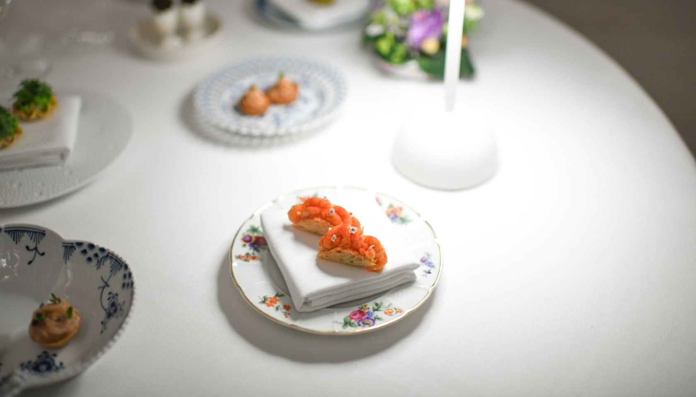

★★ · CELLAR · 1420Kong Hans Kælder
Strøget · central loop
In a 1420 cellar off Strøget. Best ★★ booking odds, cheapest entry — the fallback when Geranium and Alchemist windows are gone [1].
walking loop
bookable